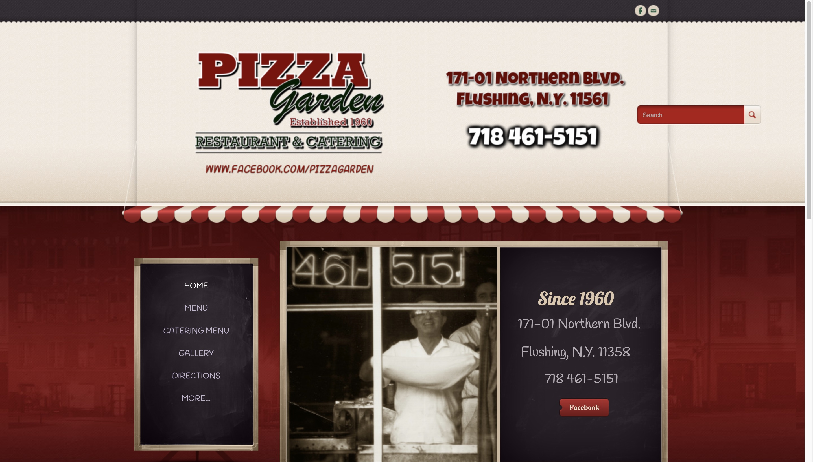
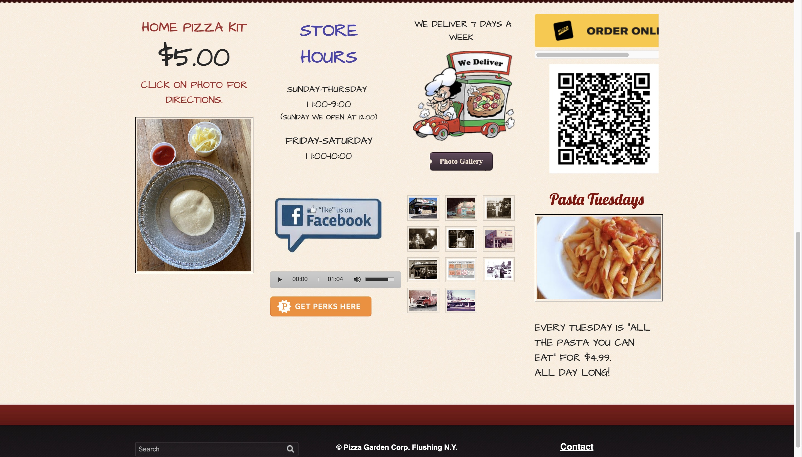

Pizza Garden's Current Webpage


Pizza Garden's website
I choose this website because it is a local pizzeria to me and I felt like the website is cluttered.
Identifying Usability Problems
Problems
- Webpage does not have a clear hierarchy.
- No hierarchical distinguishment between the navigation bar and the address and phone number.
- The same information is repeated multiple times.
- There are three buttons to their Facebook page and the written url for it.
- A url is written out without a link so a user would have to manually enter it to access it.
- The address and phone number are written twice in different locations.
- There are two search bars.
- Multiple options provided to contact them.
- Key information, such as the hours of the restaurant or how to place an order are not presented so that they can be found efficiently.
- Users have to scroll to place an online order.
- Unlabeled QR code. Doesn’t provide context to the user.
- Multiple designs for buttons.
- Different fonts and colors used for different headings.
- No spacing between sections on the bottom half of the page.
- The “MORE” section of the navigation bar leads to information already presented on home page.
- “Coupons” section of the navigation bar leads to a picture of the different coupons over the decades, rather than discounts. Different from what a user might expect of the label.
- Restaurant’s theme song automatically plays.
- Listed store hours do not include AM/PM
Accessibility
I do agree with most of the accessibility findings detected. None of the images in the gallery section have alt text, and three pictures that do have alt text, have the same descriptions, despite being wildly different. The page also uses a lot of layout tables which makes it difficult for screen readers. There are 3 headings with level 2 but only one of them is a heading. The only accessibility issue detected that I disagree with is the contrast issues. It found problems with the text written on the blackboard, but I considered the contrast to be readable.